<page-util is-owner=true is-single-item=false deleting=deleting changing=changing perm-deleting=permDeleting putting-back=puttingBack selected-array=selectedArray displayed-array=displayedDecks add-fn=showAddDeckDialog(event) del-fn=deleteDecks() perm-del-fn=permDeleteDecks() put-back-fn=putBackDecks() is-delete-filter=isDeleteFilter></page-util>
<walkthrough
            walkthrough-type="transparency"
            focus-element-selector="#sidebar-button"
            force-caption-location="BOTTOM"
            icon="single_tap"
            main-caption="Click here to navigate among different tags of Decks"
            icon-padding-left="0"
            icon-padding-top="20"
            is-active="showWholeDeck"
            has-glow="true"
            on-walkthrough-hide="showUtilButton=true">
</walkthrough>
<walkthrough
            walkthrough-type="transparency"
            focus-element-selector="#util-button"
            main-caption="Click here for creating, updating and deleting Deck"
            force-caption-location="BOTTOM"
            has-glow="true"
            is-active="showUtilButton">
</walkthrough>
<div class="no-deck" layout="column" layout-align="center center" ng-if="displayedDecks.length===0" >
      <h2>Start by adding a new deck<h2>
      
</div>
<div layout-margin layout-wrap layout="row" layout-xs="column" layout-align="center center" id="main-deckview">
	<div ng-repeat="deck in displayedDecks" ng-class=displayedDecks[$index].color+"-deck-homeview" class="deck-homeview">
    <md-checkbox class="deck-select" aria-label="select deck" ng-disabled="!deleting&&!changing&&!permDeleting&&!puttingBack" ng-checked="isSelected(deck)" ng-click="select(deck)"></md-checkbox>
		<div layout="column" layout-align="center center" class="deck-title" ng-click="viewDeck(displayedDecks[$index].id)">{{displayedDecks[$index].name | limitTo:55}}</div>
	</div>
</div>
